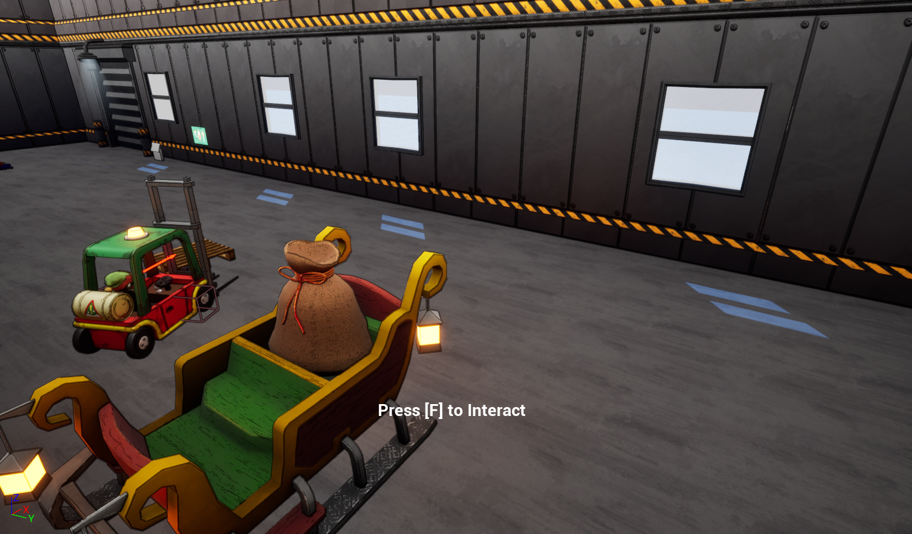
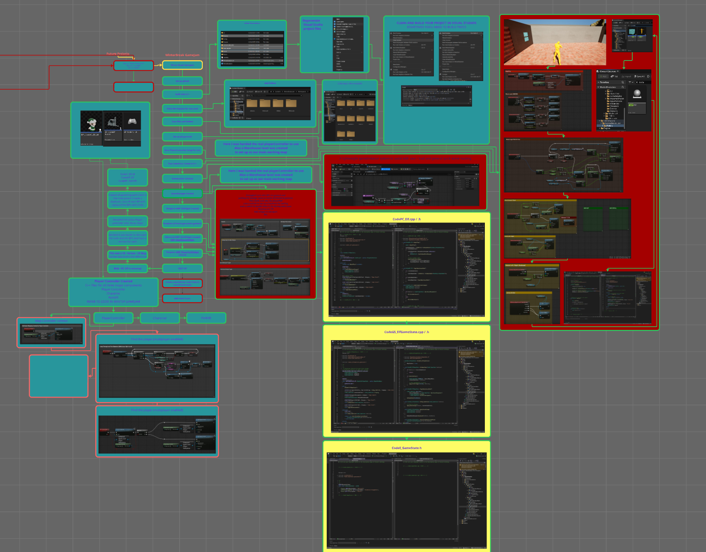
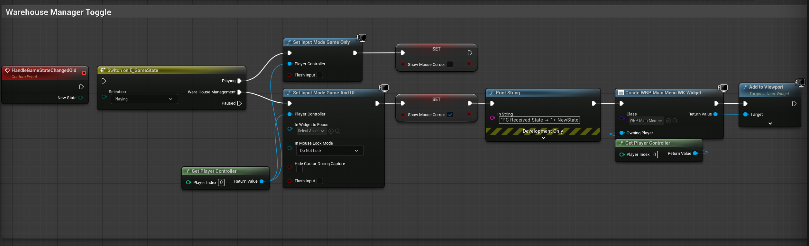

Winter Break Game Jam — Gameplay Systems & State Architecture
A rapid-development Unreal Engine 5 project focused on stabilizing gameplay, migrating core logic to C++, and implementing a clean, state-driven architecture under tight game-jam constraints.
Project Overview
This project was developed during a Winter Break Game Jam with a small team. I was responsible for rebuilding broken gameplay systems, establishing a reliable PlayerController architecture, and designing a global game-state system to support both gameplay and warehouse-management modes.
- Unreal Engine 5
- C++ Gameplay Systems
- Blueprint ↔ C++ Integration
- Game State Architecture
- Rapid Prototyping
My Contributions
-
Workspace & testing setup
Established a clean development environment with input mappings, test scenes, and debugging hooks to allow rapid iteration. -
PlayerController rebuild (Blueprint → C++)
Converted a broken Blueprint PlayerController into a fully C++-driven system handling input, possession, UI control, and server communication. -
Global game state system
Implemented a replicated, enum-driven GameState with event dispatching to synchronize gameplay flow, UI modes, and input behavior. -
Scene & mode management
Created Blueprint-driven scene and mode logic while enforcing authoritative state changes through C++.
System Architecture

The project is structured around a single authoritative GameState, with the PlayerController acting as the bridge between input, UI, and gameplay systems.
┌─────────────────────────────┐
│ GameState │
│-----------------------------│
│ Replicated Game Mode Enum │
│ OnGameStateChanged Event │
│ Order Submission Logic │
└──────────────┬──────────────┘
│
OnGameStateChanged
│
┌──────────────▼──────────────┐
│ PlayerController │
│-----------------------------│
│ Input Mapping Contexts │
│ UI & Cursor Control │
│ Pawn / Vehicle Possession │
│ Server RPCs │
└──────────────┬──────────────┘
│
┌──────────────▼──────────────┐
│ Pawn Layer │
│-----------------------------│
│ Elf Character (focus only) │
│ Forklift Pawn │
│ Pallet Actors │
└─────────────────────────────┘
State-Driven UI & Input Flow
High-level gameplay flow is controlled by a replicated enum-based game state:
- Playing — Gameplay input active, HUD visible
- Warehouse Management — Cursor enabled, management UI active
- Paused — Input restricted
Forklift Vehicle System

The forklift is implemented as a non-physics Pawn fully driven by the PlayerController. Movement and lift behavior are deterministic and tunable.
- Smooth acceleration and deceleration
- Brake-before-reverse behavior
- Speed-scaled steering
- Lerped rail and fork lift mechanisms
Order System & Server Authority
Warehouse orders flow cleanly from UI → PlayerController → GameState using server RPCs to enforce authority boundaries.
What I Learned
-
Game jams expose architecture flaws fast
Clear ownership and state flow matter more than feature count. -
PlayerController is a powerful architectural anchor
Centralizing input, UI, and possession prevents cascading bugs. -
Blueprint + C++ works best with strict boundaries
Designers move fast, systems remain safe and debuggable.